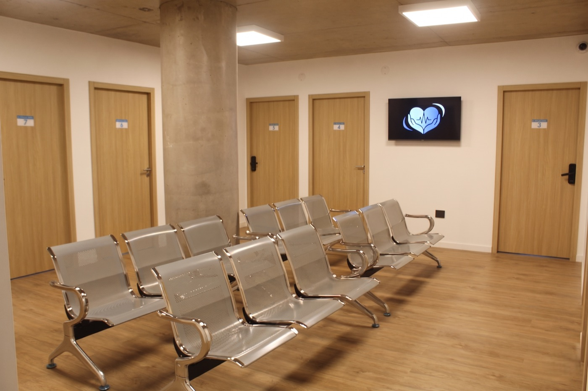
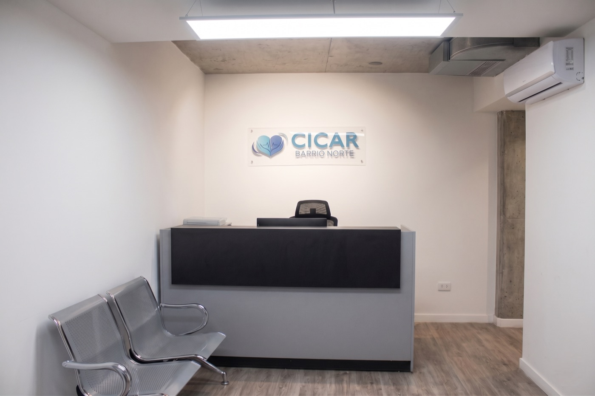
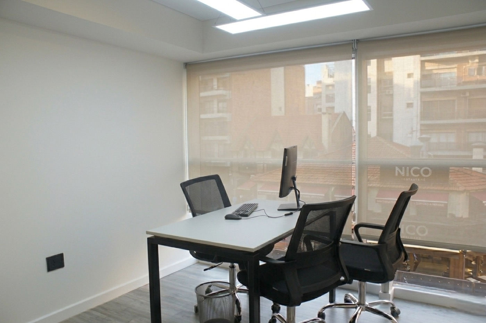
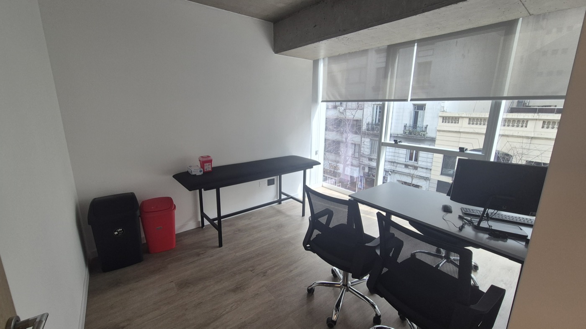
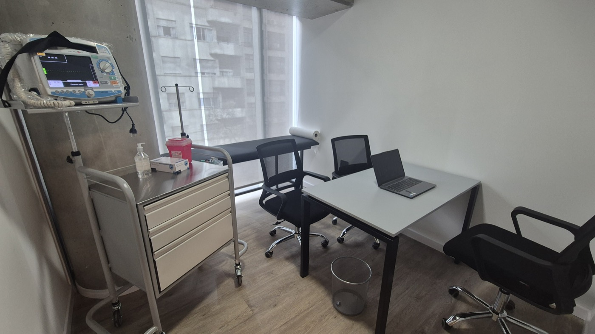
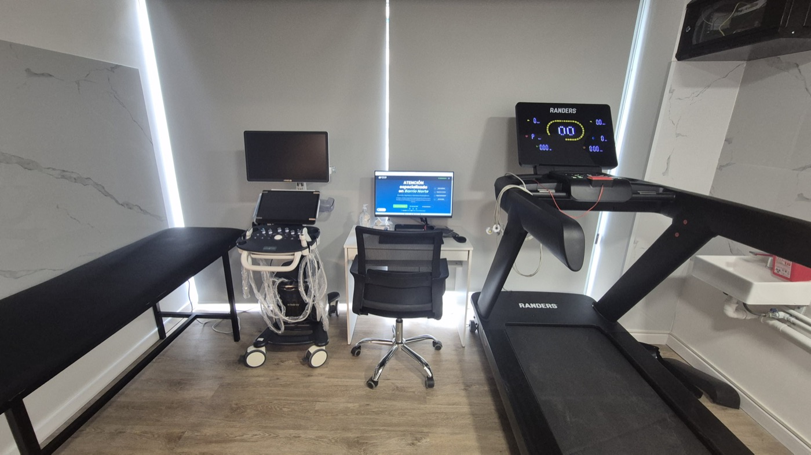

Centro de cardiología y atención especializada con instalaciones nuevas, equipamiento de última generación y equipo médico universitario. Esta presentación se mantiene en línea y siempre actualizada.
Recepción, sala de espera y ocho consultorios, cada uno pensado para una práctica específica, en un ambiente moderno y digital.






Prácticas cardiológicas y de diagnóstico por imágenes que se realizan en el centro, más las especialidades asociadas.
Equipamiento médico de última generación para diagnósticos precisos.
Escaneá el código para acceder a esta presentación en línea. Se actualiza de forma permanente: siempre vas a ver la versión vigente.